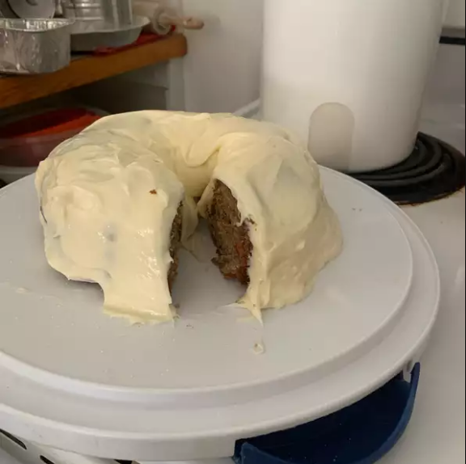

Cream Cheese Frosting II

Spinach and Strawberry Salad
Ingredients
- 2 (8 ounce) packages cream cheese, softened
- ½ cup butter, softened
- 2 cups sifted confectioners' sugar
- 1 teaspoon vanilla extract
Steps
- In a medium bowl, cream together the cream cheese and butter until creamy. Mix in the vanilla, then gradually
stir in the confectioners' sugar. Store in the refrigerator after use
Back Home